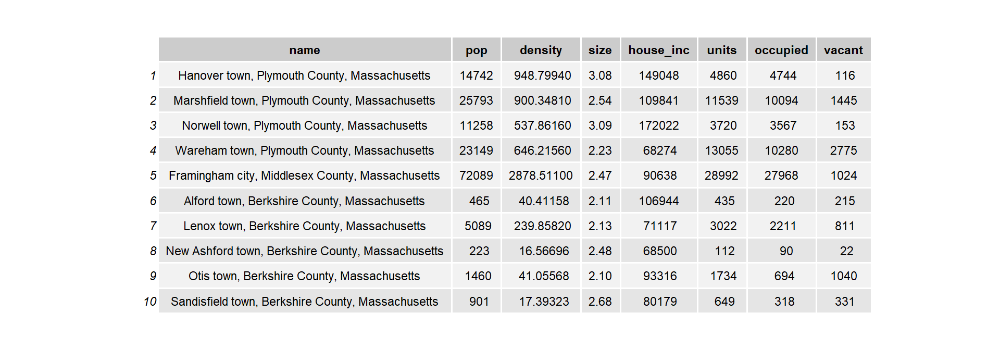
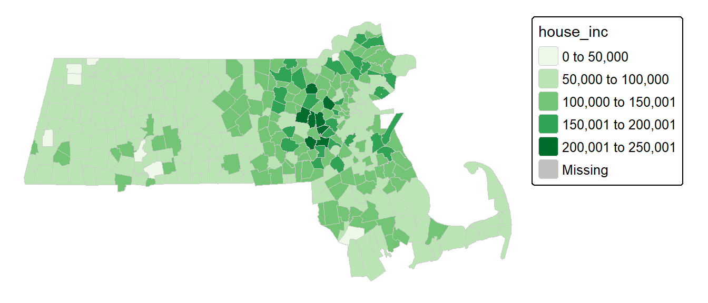
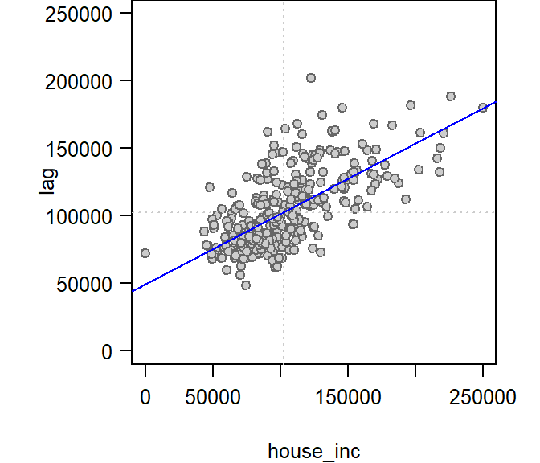
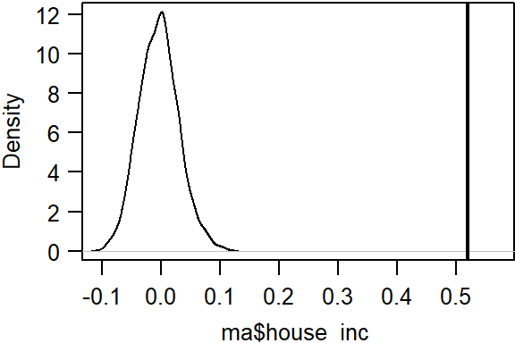
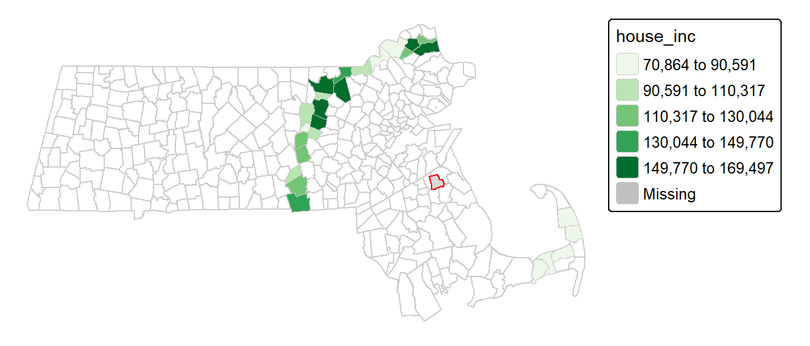
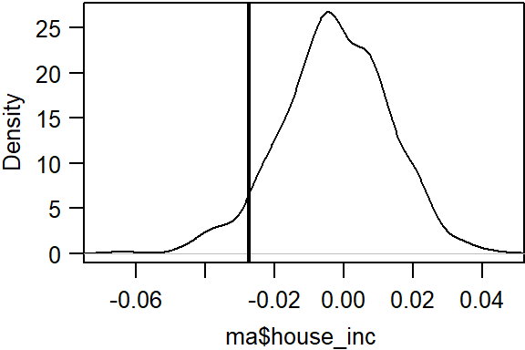
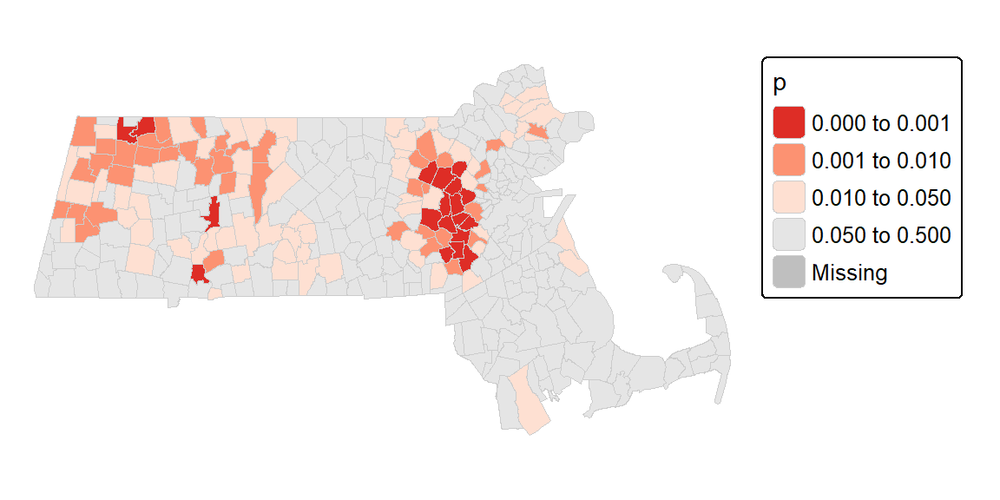
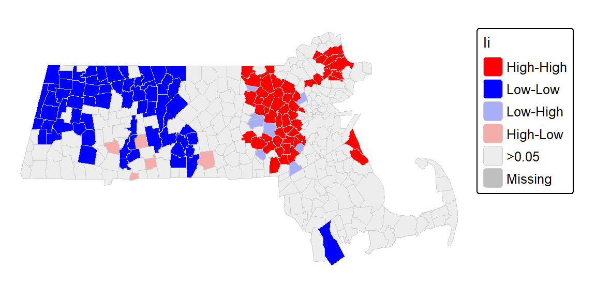
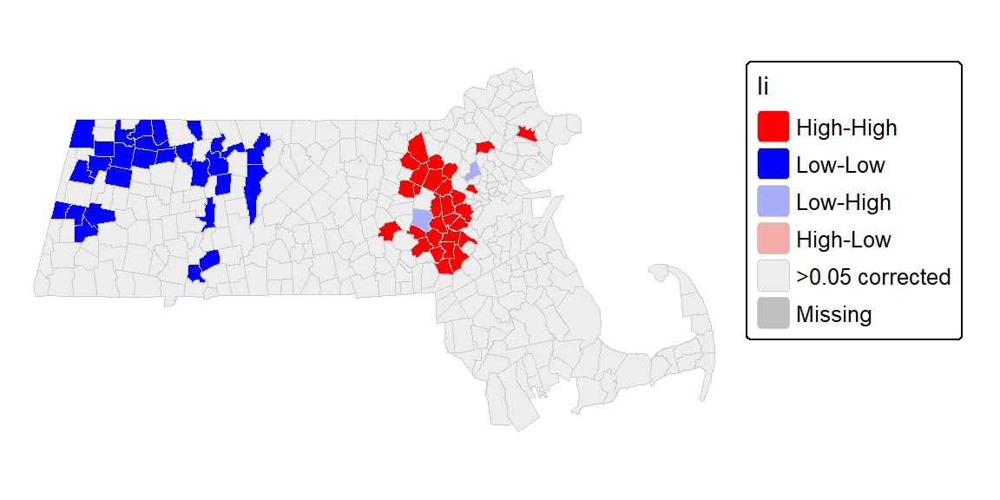

I Spatial autocorrelation in R
| R | sf | tmap | spatstat | gstat | terra | sp |
| 4.5.1 | 1.0.21 | 4.1 | 3.4.0 | 2.1.4 | 1.8.60 | 2.2.0 |
For a basic theoretical treatise on spatial autocorrelation the reader is encouraged to review the lecture notes. This section is intended to supplement the lecture notes by implementing spatial autocorrelation techniques in the R programming environment.
Sample files for this exercise
Data used in the following exercises can be loaded into your current R session by running the following chunk of code.
The ma object consists of an sf vector layer representing census data aggregated at the county subdivision level for 2021 (src. Census Bureau 5-year ACS).
Introduction
The spatial object ma has nine attributes with the first being a FIPS identifier. The one of interest for this exercise is house_inc (median household income for 2021, in units of dollars). The following table shows just the first few records of the 343 polygon layer (FIPS and geometry columns are not shown).

A map of the income distribution using an equal interval classification scheme is generated using the tmap package.
library(tmap)
tm_shape(ma) + tm_polygons(style="equal", border.col = "grey80", lwd = 0.5,
col = "house_inc", palette="Greens") +
tm_legend(outside = TRUE, text.size = .8) +
tm_layout(frame = FALSE)
Define neighboring polygons
We must first define what is meant by “neighboring” polygons. This can refer to contiguous polygons, polygons within a certain distance band, or it could be non-spatial in nature and defined by social, political or cultural “neighbors”.
In this example, we’ll adopt a contiguous neighbor definition where we’ll accept any contiguous polygon that shares at least on vertex (this is the “queen” case and is defined by setting the parameter queen=TRUE in the poly2nb() function). If we required that at least one edge be shared between polygons then we would set queen=FALSE.
Other neighborhood functions that can be implemented in spdep include:
dnearneigh |
distance based neighbor (allows for annulus neighbors) | For point geometry |
knearneigh + knn2nb |
k nearest neighbor | For point geometry |
For each polygon in our polygon object, nb lists all polygons deemed contiguous. For example, to see the neighbors for the first polygon in the object, type:
[1] 3 34 149 150Polygon 1 has 4 neighbors. The numbers represent the polygon IDs as stored in the spatial object ma. Polygon 1 is associated with the following name attribute:
[1] "Hanover town, Plymouth County, Massachusetts"Its four neighboring polygons are associated with the counties:
[1] "Marshfield town, Plymouth County, Massachusetts"
[2] "Norwell town, Plymouth County, Massachusetts"
[3] "Wareham town, Plymouth County, Massachusetts"
[4] "Framingham city, Middlesex County, Massachusetts"Next, we need to assign weights to each neighboring polygon. In our case, each neighboring polygon will be multiplied by the weight \(1/ (\#\ of\ neighbors)\) (style="W"–note the uppercase "W") such that the sum of the weights equal 1. If a binary weight is desired (i.e. one where each neighboring polygon is a assigned a weight of 1, regardless of the number of neighbors), set style="B".
The zero.policy=TRUE option allows for lists of non-neighbors. This should be used with caution since the user may not be aware of missing neighbors in their dataset. Setting zero.policy to FALSE will return an error if at least one polygon has no neighbor.
To see the weight of the first polygon’s four neighbors type:
[[1]]
[1] 0.25 0.25 0.25 0.25For polygon 1, each neighbor is assigned a quarter of the total weight. This means that when R computes the neighboring income values, each neighbor’s income will be multiplied by 0.25 before being summed thus giving us the arithmetic mean of polygon 1’s neighbors.
Generating a Moran’s I scatter plot
If you wish to view the relationship between each polygon’s value (house_inc in this working example) and its spatially lagged values, you need to first extract the lagged values from the lw object.
We can plot lagged income vs. income and fit a linear regression model to the data.
# Create a regression model
M <- lm(lag ~ house_inc, ma)
# Plot the data
plot( lag ~ house_inc, ma, pch=21, asp=1, las=1, col = "grey40", bg="grey80")
abline(M, col="blue") # Add the regression line from model M
abline(v = mean(ma$house_inc), lty=3, col = "grey80")
abline(h = mean(ma$house_inc), lty=3, col = "grey80")
The slope of the regression model is the Moran’s I coefficient. The next step will show you how to compute this statistic without needing to compute the lagged values and fitting a regression model.
Computing the Moran’s I coefficient
The Moran’s I global statistic can be computed uisng the moran function. Note that you need to specify the attribute value (house_inc in this example) and not just the geometric elements.
$I
[1] 0.5199357
$K
[1] 4.602809listw is passed the weights list. n is the total number of features having at least one neighbor. This values can be extracted via length(nb) . S0 is the sum of all weights which, in our example should sum to the number of observations with non-zero neighbors. Here too, we make use of another function, Szero(lw) (note the uppercase S) to extract that number.
Assessing statistical significance
To assess if the Moran’s I statistic (i.e. the slope in the scatter plot) is significantly different from zero, we can randomly permute the income values across all polygons (i.e. we are not imposing any spatial autocorrelation structure), then we compute a Moran’s I coefficient for each permuted set of values. This gives us the distribution of Moran’s I values we could expect to get under the null hypothesis that the income values are randomly distributed across all census units. We then compare the observed Moran’s I value to this distribution. In this example, we’ll permute the data 999 times by setting nsim = 999.
Monte-Carlo simulation of Moran I
data: ma$house_inc
weights: lw
number of simulations + 1: 1000
statistic = 0.51994, observed rank = 1000, p-value = 0.001
alternative hypothesis: greater# Plot the distribution (note that this is a density plot instead of a histogram)
plot(MC, main="", las=1)
The simulation suggests that our observed Moran’s I value is not consistent with a Moran’s I value one would expect to get if the income values were not spatially autocorrelated. The pseudo p-value can be extracted from the MC model as:
[1] 0.001In our simulation, none of the Moran’s statistics computed from the permuted data was more extreme than our observed Moran’s I value. The p-value is therefore capped by the number of simulations. in other words, we cannot compute a p-value less than \(1/(1 + N)\) (where N is the total number of simulations) or 1/(1 + 999) = 0.001.
Note that by default, the moran.mc function will compute the number of simulations greater than the observed statistic. So, if the observed statistic is on the left side of the distribution, the pseudo p-value will be greater than 0.5 (note that this is a one-sided test). You can change the alternative hypothesis to one where we may expect a more dispersed pattern by setting the parameter alternative to "less".
Moran’s I as a function of a distance band
In this section, we will explore spatial autocorrelation as a function of distance bands.
Instead of defining neighbors as contiguous polygons, we will define neighbors based on distances to polygon centers. We therefore need to extract the center of each polygon.
The object xy stores all 343 pairs of coordinate values (i.e. the same number of points as polygons).
Next, we will define the search radius to include all neighboring polygon centers that are at least 70 km away but less than 80 km away.
The dnearneigh function takes three parameters: the coordinate values xy, the radius for the inner radius of the annulus band, and the radius for the outer annulus band. In our example, the inner annulus radius is 70km which implies that all polygon centers up to 70km are not included in the lagged value calculation.
Polygon 1 has 26 polygons as neighbors when adopting the annulus definition.
[1] 26You can map the neighbors for polygon 1 as follows. (Polygon 1 is shown with a red fill color).
annulus1 <- ma[s.dist[[1]], "house_inc"] # Extract polygon 1's neighbors
tm_shape(ma) + tm_borders(col = "grey80") +
tm_shape(ma[1,]) + tm_fill(col="red") +
tm_shape(annulus1) + tm_polygons(style="equal", border.col = "grey80", lwd = 0.5,
col = "house_inc", palette="Greens") +
tm_legend(outside = TRUE, text.size = .8) +
tm_layout(frame = FALSE)
Now that we defined the distance based neighbors for all polygons, we need to compute their weights. We will adopt the same weighing scheme used in the contiguous definition of neighbors in the earlier example.
The polygon 1’s neighbors are each assigned a weight of 0.0384615.
[1] 0.03846154 0.03846154 0.03846154 0.03846154 0.03846154 0.03846154
[7] 0.03846154 0.03846154 0.03846154 0.03846154 0.03846154 0.03846154
[13] 0.03846154 0.03846154 0.03846154 0.03846154 0.03846154 0.03846154
[19] 0.03846154 0.03846154 0.03846154 0.03846154 0.03846154 0.03846154
[25] 0.03846154 0.03846154Run the MC simulation.
Plot the results.

Here, we are observing a different statistical outcome. The observed Moran’s I coefficient is on the left side of the distribution suggesting that income values tend to be more different than similar when separated by a 50 km distance.
Display p-value and other summary statistics.
Monte-Carlo simulation of Moran I
data: ma$house_inc
weights: lw
number of simulations + 1: 600
statistic = -0.027383, observed rank = 32, p-value = 0.9467
alternative hypothesis: greaterSince we went with the default alternative parameter of "greater" in the moran.mc function, the output is giving us the fraction of simulated values greater than our observed value–about 94.7% in our example. Given that our observed statistic is on the left side of the distribution, it’s best to report the p-value as (1 - 0.947) or 0.053 with the alternative hypothesis that the values are more dissimilar than expected.
Local Moran’s I
To compute local indicators of spatial autocorrelation (Local Moran’s I), we can make use of the localmoran function from the spdep package. However, this function adopts an analytical approach to computing the p-value. It’s best to adopt a Monte Carlo approach. This can be performed using the localmoran_perm function. In this example, we will run 9999 permutations for each polygon.
We’ll first revert to our earlier definition of neighbor (i.e. one of contiguity).
Next, we’ll run the local Moran’s I analysis using the localmoran_perm function.
The object MCi stores several parameters including the local Moran’s statistic for each polygon, \(I_i\), and its associated pseudo p-value. MCi.df is a dataframe version of the MCiobject.
Next, we’ll add the pseudo p-values to the ma spatial object.
Note that the localmoran_perm function generates two different p-values: MCi.df$`Pr(z != E(Ii)) Sim` and MCi.df$`Pr(folded) Sim`. The former is for a two sided test (alternative = "two.sided") and the latter is a “folded” p-value for a one-sided test.
We can generate a map of the pseudo p-values as follows:
pal1 <- c("#DE2D26","#FC9272", "#FEE0D2", "grey90")
library(tmap)
tm_shape(ma) + tm_polygons(style="fixed", breaks = c(0, 0.001, 0.01, 0.05, 0.5),
col = "p", palette=pal1, border.col = "grey80", lwd = 0.5) +
tm_legend(outside = TRUE, text.size = .8) +
tm_layout(frame = FALSE) 
Next, we’ll map the significant clusters.
First, we will use the hotspot function to identify “significant” clusters using a p-value cutoff of 0.05. Since the output is a factor, a manipulation of its levels is made to facilitate the assignment of colors when generating the map.
ma$Ii <- hotspot(MCi, Prname="Pr(folded) Sim", cutoff = 0.05, p.adjust = "none")
# Replace NA with ">0.05". This requires that the Ii factor be re-leveled
ma$Ii <- factor(ma$Ii, levels=c("High-High","Low-Low", "Low-High", "High-Low", ">0.05"))
ma$Ii[is.na(ma$Ii)] <- ">0.05"Next, we define the color palette, then we generate the map.
pal2 <- c( "#FF0000", "#0000FF", "#a7adf9", "#f4ada8","#ededed")
tm_shape(ma) + tm_polygons(style="cat", border.col = "grey80", lwd = 0.5,
col = "Ii", palette=pal2) +
tm_legend(outside = TRUE, text.size = .8) +
tm_layout(frame = FALSE)
Correcting for multiple comparisons
The p.adjust parameter in the hotspot function can be used to correct for multiple tests. One popular correction is the False Discovery Rate (FDR) that can be implemented by setting p.adjust to "fdr".
ma$Ii <- hotspot(MCi, Prname="Pr(folded) Sim", cutoff = 0.05, p.adjust = "fdr")
# Replace NA with ">0.05". This requires that the Ii factor be re-leveled
ma$Ii <- factor(ma$Ii, levels=c("High-High","Low-Low", "Low-High", "High-Low", ">0.05 corrected"))
ma$Ii[is.na(ma$Ii)] <- ">0.05 corrected"We now have a more stringent implementation of the p-value.
tm_shape(ma) + tm_polygons(style="cat", border.col = "grey80", lwd = 0.5,
col = "Ii", palette=pal2) +
tm_legend(outside = TRUE, text.size = .8) +
tm_layout(frame = FALSE) 